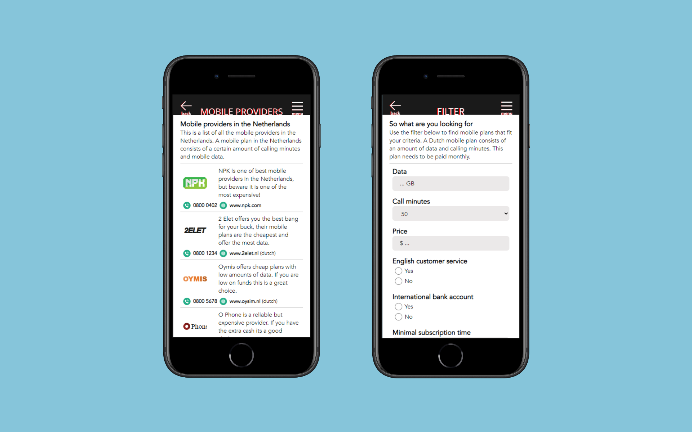

Een dummy website voor het vinden van mobiele providers
Nederlandse providers voor internationale studenten
-
Voor een project uit het eerste jaar moest ik een deel van het international student guide Amsterdam boekje digitaliseren. Uit een reeks interviews bleek dat internationale studenten moeite hadden met het afsluiten van mobiele abonnementen in Nederland, vandaar dat ik hier mijn focus heb gelegd.
Mijn onderzoek heeft uiteindelijk geleid tot het volgende prototype. Het gaat hier om een dummy mobiele website waarmee gebruikers mobiele abonnementen mee zouden kunnen afsluiten. NOTE* De website werkt alleen op mobiele formaten.
-

- 